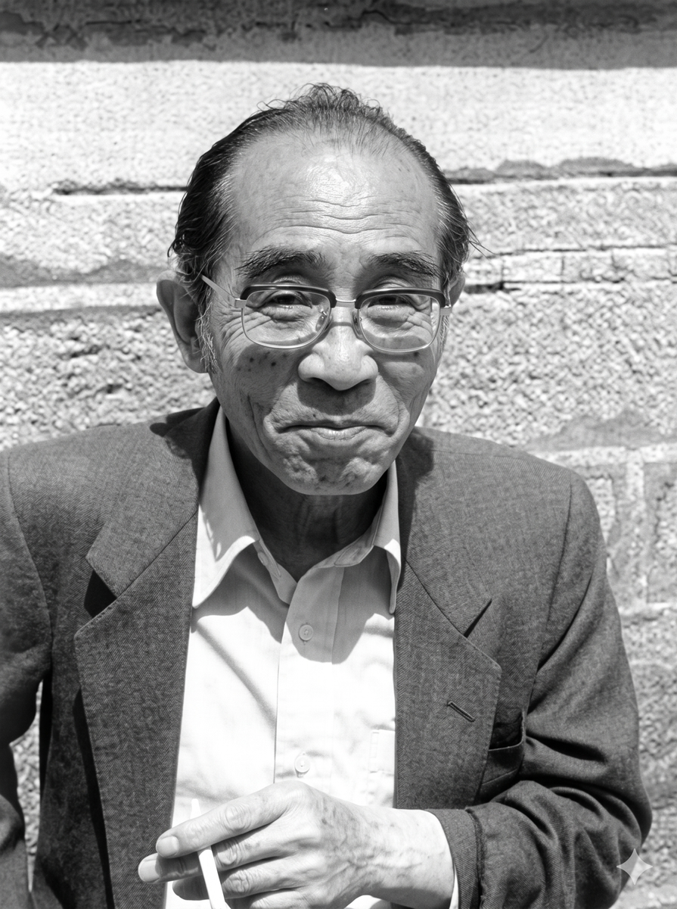

INGBERG VS. KAWAGOE: DOS MODELOS QUE DEFINIERON EL ENTENDIMIENTO DE LOS INCENDIOS EN RECINTOS
La ingeniería contra incendios del siglo XX se apoyó en dos modelos que describen realidades completamente distintas. El primero es el enfoque de Ingberg, que dominó por décadas y asumía que la severidad del incendio dependía de la cantidad total de energía contenida en el combustible. El segundo es el modelo de Kawagoe, basado en experimentos de recintos reales, que demostró que la combustión en interiores no está gobernada por la energía disponible sino por el aire que el espacio puede suministrar. La diferencia entre ambos enfoques marca el punto donde la disciplina pasó de ser un ejercicio de inventario a una interpretación física del incendio.
Ingberg planteó que la severidad del incendio podía estimarse a partir de la densidad de carga de fuego, un valor que relaciona la energía total del material combustible con el área del recinto. Su modelo asumía que cuanto mayor es el inventario energético, mayor será la temperatura alcanzada y mayor la exigencia estructural. Ese enfoque funcionaba mientras se evaluaban incendios a gran escala sin restricciones ventilatorias, pero ignoraba que un recinto real impone límites físicos que alteran la combustión desde etapas tempranas.

Kawagoe, trabajando con incendios controlados en recintos de distintos tamaños, mostró que la ventilación fija un límite claro en la cantidad de energía que el incendio puede liberar. La potencia máxima no depende del combustible disponible sino de la capacidad del vano para suministrar oxígeno y permitir el flujo convectivo necesario para sostener la combustión. Su ecuación basada en el área y la altura efectiva del vano demostró que dos recintos con la misma carga de fuego pueden producir incendios completamente distintos si la ventilación cambia, lo que invalidó la premisa central del enfoque de Ingberg.
La diferencia técnica entre ambos modelos puede resumirse en una línea. Ingberg describe un potencial que rara vez se alcanza y Kawagoe describe el límite real que gobierna casi todos los incendios interiores. La carga combustible señala cuánta energía podría liberarse, pero la ventilación señala cuánta energía puede liberarse en condiciones reales. Esa transición conceptual cambió para siempre la forma de interpretar incendios en espacios cerrados y estableció el marco que todavía organiza la teoría moderna del fuego en recintos.